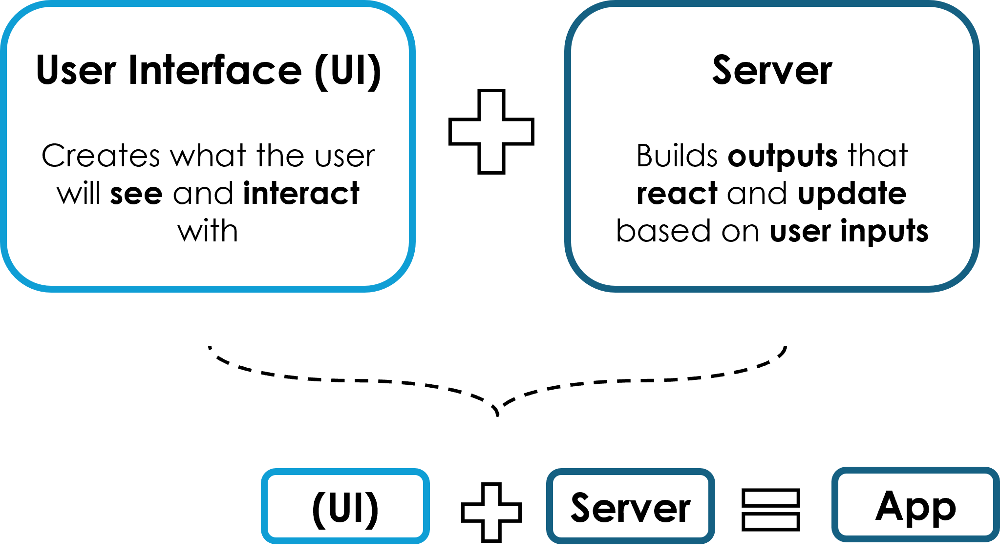
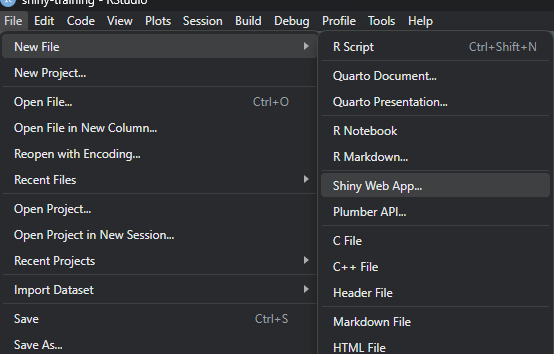
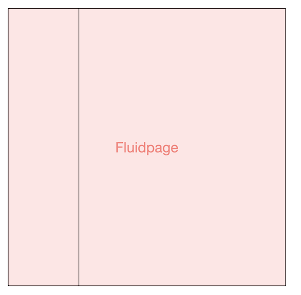
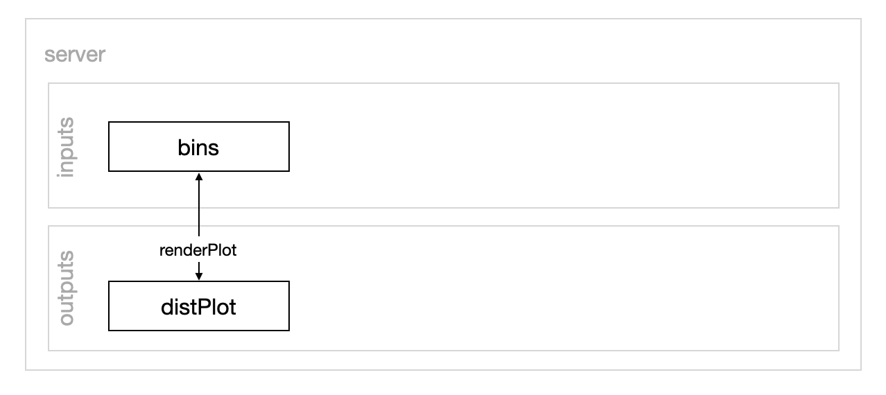
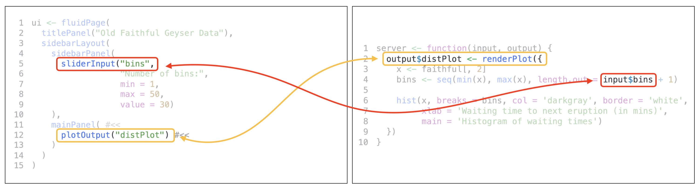

Shiny is a web application framework for R that allows you to turn analyses into interactive web apps — all in R.
Why use it?
Easy to learn and use
Fast development cycle
Powerful for data visualization
Built on R (leverage your analysis directly)
Great for sharing insights interactively
Anatomy of a Shiny App
A Shiny app has two core components:
UI (User Interface): Defines how the app looks
Server: Defines how the app works

The Client, Host, and Server
Apps are served to users via a host and port. The R session running the server reacts to user actions, computes results, and sends them back.
Client: The web browser where the user interacts with the app
Host:Port: Shiny app is served at an IP (host) and port
Server: Runs R session to monitor inputs and respond with outputs
Let’s Build Our First App Together (with the help of the R template) ✍️
Step-by-step instructions:
Open RStudio
If you haven’t already installed Shiny, run:
install.packages("shiny")
Load the Shiny library:
library(shiny)
Create a new Shiny Web App: Click on File > New File > R Shiny Web App

Let’s Build Our First App Together (with the help of the R template) ✍️
5. Choose Single File option when prompted:
6. Name your folder and click OK
7. Click Run App in the top-right corner
8. 🎉 You’re running your first Shiny app!
Let’s Explore the Code 🧠
ui — User Interface
ui <-fluidPage( #<<titlePanel("Old Faithful Geyser Data"),sidebarLayout(sidebarPanel(sliderInput("bins", "Number of bins:", min =1, max =50, value =30) ),mainPanel(plotOutput("distPlot") ) ))

Layout elements
fluidPage() is the container for the app interface, the layout in which your content is. This is the most common, but there are other types of layouts. Check here
ui — User Interface
ui <-fluidPage(titlePanel("Old Faithful Geyser Data"),sidebarLayout( #<<sidebarPanel(sliderInput("bins", "Number of bins:", min =1, max =50, value =30) ),mainPanel(plotOutput("distPlot") ) ))
Layout elements
sidebarLayout() splits the layout into sidebar (sidebarPanel()) and main area (mainPanel()). This is also optional.
sidebarPanel() contains one input field (sliderInput()) called “bins”. This is a slider that lets a user choose a number. As you can infer from the name, in this case, it’s the number of histogram bins.
ui — User Interface
ui <-fluidPage(titlePanel("Old Faithful Geyser Data"),sidebarLayout(sidebarPanel(sliderInput("bins", "Number of bins:", min =1, max =50, value =30) ),mainPanel( #<<plotOutput("distPlot") #<< ) ))
Page content
mainPanel() contains a histogram (plotOutput()), which will be defined in the server function. The name, or id, of this histogram is “distPlot”
Shiny server Logic Explained ⚙️
server <-function(input, output) {...}
The server() function takes two arguments:
input: a reactive list of input values from the UI
output: a reactive list where you assign render functions
Reactive lists are “special” lists used in reactive programming — a way to make your app automatically update outputs when inputs change.
Shiny server Logic Explained ⚙️
server <-function(input, output) { output$outputId <-renderFunction({ value <- input$inputId})}
Let’s take a look at reactivity inside a simple server( ):
renderFunction: A function like renderPlot(), renderTable(), etc. used to render an output (a plot, a table…)
outputId: Identifies the rendered output in the output list (output$) for the UI
The function regenerates value every time the input field referenced by inputID in the input list changes.
Shiny server Logic Explained ⚙️
server <-function(input, output) { output$distPlot <-renderPlot({ x <- faithful[, 2] bins <-seq(min(x), max(x), length.out = input$bins +1)hist(x, breaks = bins, col ='darkgray', border ='white',xlab ='Waiting time to next eruption (in mins)',main ='Histogram of waiting times') })}
In our case:
the server contains the logic to create the histogram distPlot in the output list (output$), using the render function renderPlot().
distPlot depends on one user input (input$bins), which pulls the number from the slider input in the UI.

➡️️ Result: the histogram updates as the slider moves!
How the Server Connects to the UI 🧩
Remember these connections?
UI
Server
plotOutput("distPlot")
output$distPlot <- renderPlot()
sliderInput("bins", ...)
input$bins

Inputs & Outputs in Shiny 🧠
Shiny apps are built by connecting inputs (from the UI) to outputs (rendered in the server).
Before you close the app, check the R console. You’ll see something like:
#> Listening on http://127.0.0.1:3827
🔍 What it means: - 127.0.0.1 refers to your local machine (“localhost”) - 3827 is a random port number - You can open the app in any browser using this address
⛔ While the app is running: - The R console is blocked (no new commands allowed) - A stop sign appears in the RStudio toolbar
🛑 To stop the app: - Click the stop sign icon - Press Esc (or Ctrl + C in terminal) - Close the Shiny app window
Questions
Share your Shiny app
🏢 Posit Connect Internal Server
Recommended option for secure deployment within the Bank
Content is deployed on Bank server behind a firewall, only accessible to Bank employees
🌐 Posit Connect Public Server
Content is deployed on Bank server behind a firewall, but accessible to all.
Only display public use data
For both:
Push-button publishing from RStudio or publish directly from GitHub
Request Posit Connect access as a Software Request